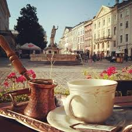

Станом на 1 січня 2010 року у Львові налічується 7 чотиризіркових, 8 тризіркових та 16 інших готелів. У місті також діє 11 гостелів[94]. Львів відомий своїми кав'ярнями, цукернями та рестораціями. Загалом у місті нараховується 822 об'єкти ресторанного бізнесу.
на головну